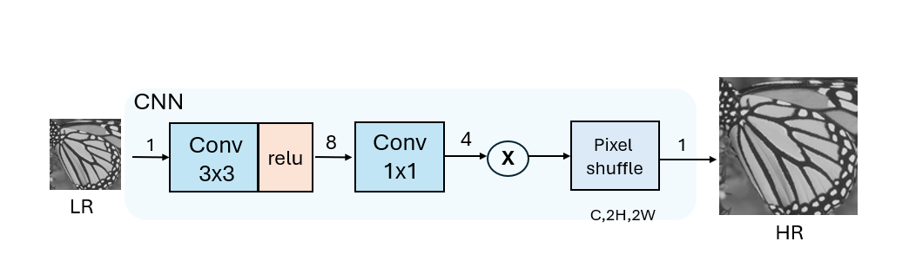

SR Core 最小功能設計紀錄
位置：model_lite/sr_core/html/index.html
相關 M0、Z1*a2 推導：tflite_quant_to_hw.html
學習紀錄：scale_zero_point_learning.html
工具紀錄：python_toolchain_record.html
Vivado hex 轉檔工具：tool_convert_generated_to_vivado_hex.html
驗證紀錄：runtime_verified_golden_flow.html
RTL 開發紀錄：rtl/index.html
RTL_sys 系統架構：RTL_sys_index.html
Phase2 Conv3 1x1 MAC：phase2_conv1x1_mac.html
Phase2.5 Conv3 block：phase2_5_conv3_block.html
Phase3 PixelShuffle：phase3_pixel_shuffle_transaction_core.html
Phase4 Conv1 3x3 MAC：phase4_conv1_3x3_mac.html
Phase4.5 Conv1 full block：phase4_5_conv1_full_block.html
Phase5 Output Clip：phase5_output_clip.html
Phase6 Output Stage：phase6_output_stage.html
Phase7 SR Core Top：phase7_sr_core_top.html
Phase8 完整紀錄：phase8_index.html
Phase8.1 Self-Check：phase8_1_memory_mapping_selfcheck.html
Phase8.2 Wrapper：phase8_2_memory_oriented_wrapper.html
Phase8.3 Vivado BRAM：phase8_3_vivado_bram.html
Phase8.3 GUI 操作：phase8_3_vivado_bram_gui.html
Phase8.4 ROM-backed Wrapper 分析：phase8_4_rom_backed_wrapper.html
Phase8.4a ROM Timing Analysis：phase8_4a_rom_timing_analysis.html
Phase8.4b ROM Preload Wrapper：phase8_4b_rom_preload_wrapper.html
下一版部署 Roadmap：deployment_roadmap.html
這份文件用來回答目前最重要的設計問題：TFLite 權重要不要跟固定輸入尺寸綁在一起，
以及 sr_core 第一版應該切到多少才適合逐步驗證。
Project Workspace Split
目前 SR accelerator 已完成 module-level 與 end-to-end functional verification。 從現在開始，專案分成兩個工作區：已驗證的 RTL module library，以及新的 system architecture workspace。
| Workspace | 定位 | 入口 |
|---|---|---|
| RTL Modules | 已驗證模組。保留目前 PASS 的 Conv1、Conv3、PixelShuffle、OutputStage、sr_core_top，作為 Golden RTL Version。 | rtl/index.html |
| RTL System Architecture | 系統整合與未來開發。Weight Memory、Streaming、BRAM、AXI、DMA、PS-PL integration 都從這裡開始。 | RTL_sys_index.html |
新規則：未來新的 architecture refactor 不直接修改 model_lite/sr_core/RTL。
RTL 保留為 verified module library；
RTL_sys 作為 accelerator system architecture workspace。
1. 目前架構圖理解

這張圖的核心資料路徑是：
LR input, C=1 -> Conv 3x3, Cout=8 -> ReLU -> Conv 1x1, Cout=4 -> quantization / clamp / format conversion -> PixelShuffle, scale=2 -> HR output, C=1, H=2H, W=2W
這個切法很適合你的最終目標，因為它剛好對應 model/ 裡的簡化版 Super Resolution：
第一層負責抽特徵，第二層產生四個 sub-pixel channel，最後由 PixelShuffle 做 Depth-to-Space。
2. TFLite 權重要用固定尺寸還是不要？
建議答案：最小功能階段先不要把「權重」和固定影像尺寸綁死。
但 RTL / testbench 的 feature map 尺寸可以先固定成小 patch，例如 8x8、
16x16，這樣最容易驗證。
2.1 為什麼權重不需要固定尺寸？
Conv2D 的 weight shape 只跟 kernel size、input channel、output channel 有關，
跟輸入影像的 H、W 無關。
| Layer | Weight shape | 是否跟 H/W 有關 |
|---|---|---|
| Conv 3x3 | [8, 3, 3, 1] |
無關 |
| Conv 1x1 | [4, 1, 1, 8] |
無關 |
所以對 PL 來說，TFLite 的固定尺寸或動態尺寸不是「權重格式」問題， 而是 activation buffer 大小、output buffer 大小、golden result 產生方式的問題。
2.2 最小功能階段推薦使用哪個 TFLite？
第一版建議以 Bilinear_PP_v5_test_qat.tflite 當主要 golden 來源，
因為它是動態輸入尺寸，比較容易拿小 patch 做驗證。你可以用很小的 input，
例如 8x8x1，直接比對 TFLite / Python golden，不需要一開始就跑完整 256x320。
Bilinear_PP_v5_test_qat_time.tflite 則保留到後面整張圖或效能驗證時使用，
因為它的 input 固定為 [1,256,320,1]，更接近最後部署情境，
但不適合第一個最小 test。
重要：不要混用兩個 TFLite 的 quantization parameter。 即使模型拓撲一樣，固定尺寸版與動態尺寸版的 input/output scale 可能不同。 最小功能階段應該選定一個 TFLite，weight、bias、scale、zero point 都從同一個檔案來。
3. sr_core 第一版邊界
sr_core 第一版應該先是「純運算核心」，不要把 AXI DMA、AXI-Lite register、
PS 控制流程全部塞進來。這樣可以先用 testbench 驗證數學結果，再往外接 PS/PL。
3.1 第一版不放進 sr_core 的東西
| 項目 | 原因 | 之後放哪裡 |
|---|---|---|
| AXI-Lite register | 屬於 PS 控制介面，先不影響 MAC 正確性。 | sr_axi_lite_regs |
| AXI DMA / AXI Stream packet parser | 屬於資料搬運，先不要和卷積除錯混在一起。 | sr_axis_rx、sr_packet_loader |
| 完整圖片輸入輸出 | buffer 太大，第一版驗證時間和除錯成本太高。 | Stage 5 再做 |
3.2 sr_core 第一版建議 port 概念
sr_core_top
input:
clk
rst_n
start
input feature buffer read data
weight buffer read data
bias / quant parameter read data
output:
busy
done
output feature buffer write enable
output feature buffer write address
output feature buffer write data
也就是說，第一版可以假設 input、weight、bias、quant parameter 已經被外部 loader 放進 buffer。
sr_core 只負責依照固定流程把它們讀出來、計算、寫回 output buffer。
4. 最小功能實作順序
為了符合「可驗證優先」，不建議第一個 RTL 就直接完成整張圖裡的所有 block。 建議分成下面幾個小階段。
| 階段 | 硬體功能 | 驗證目標 |
|---|---|---|
| Core V0 | 單點 1x1 Conv，int8 input/weight，int32 accumulation。 | 確認 MAC、bias、requantization 公式正確。 |
| Core V1 | Conv 3x3，Cin=1，Cout=8，小 patch。 | 確認 window、padding、row/col 掃描正確。 |
| Core V2 | Conv 3x3 + ReLU + requantization。 | 確認 Conv1 output 可以對齊 TFLite intermediate tensor。 |
| Core V3 | Conv 1x1，Cin=8，Cout=4。 | 確認產生 PixelShuffle 前的 4-channel sub-pixel tensor。 |
| Core V4 | 接入既有 PixelShuffle wrapper。 | 確認 Depth-to-Space 位置 mapping 完全正確。 |
5. sr_core 內部 data flow
input_buffer -> stream_window_3x3 -> conv3x3_mac_cin1_cout8 -> requantize_conv1 -> relu_int8 -> feature_buffer_mid -> conv1x1_mac_cin8_cout4 -> requantize_conv3 -> pixel_shuffle_wrapper -> output_buffer
PixelShuffle 應該放在 Conv1x1 之後，而且要在 Conv1x1 的 requantization 之後， 因為 PixelShuffle 只負責重新排列資料，不應該同時改變數值。這樣每一段都可以分開比對 golden result。
6. control flow 建議
IDLE 等待 start CHECK_PARAM 確認 input shape、weight loaded、quant parameter loaded RUN_CONV3X3 掃描 input H x W，產生 Conv1 output DRAIN_CONV3X3 等待 MAC pipeline valid 清完 RUN_CONV1X1 掃描 mid feature H x W x 8，產生 4-channel sub-pixel tensor RUN_PIXEL_SHUFFLE 啟動既有 PixelShuffle wrapper，輸出 2H x 2W DONE 拉高 done，等待 PS 或 testbench 清 start
第一版 FSM 不追求最高效率。重點是每個 state 的責任單一、valid 訊號容易追， debug waveform 好看。
7. 目前結論
最小功能階段建議：使用動態尺寸 TFLite 當 golden 來源，但 RTL 先固定小 patch 尺寸。
權重、bias、scale、zero point 完全從同一個 TFLite 匯出，不要混用固定尺寸版和動態尺寸版。 等 sr_core 的 Conv / Quant / PixelShuffle 都通過小 patch 驗證後，再切換到固定尺寸版做完整影像部署測試。